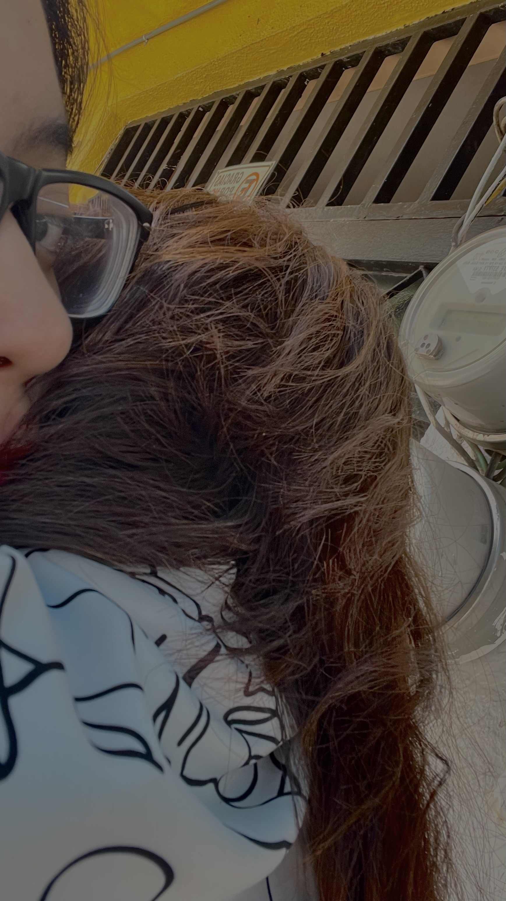
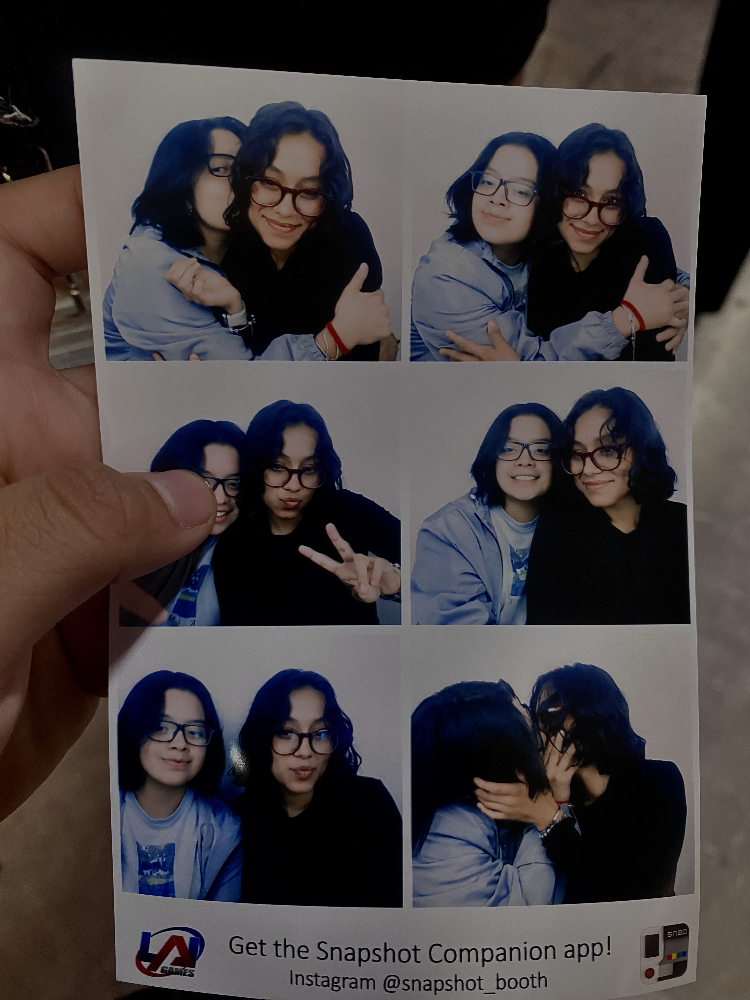
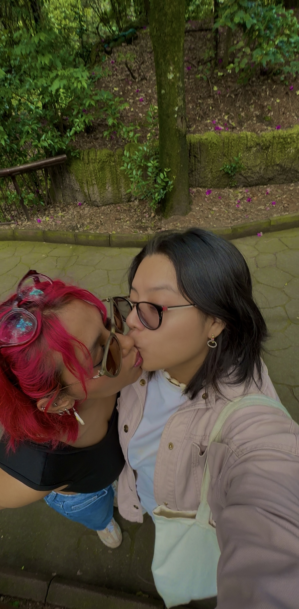
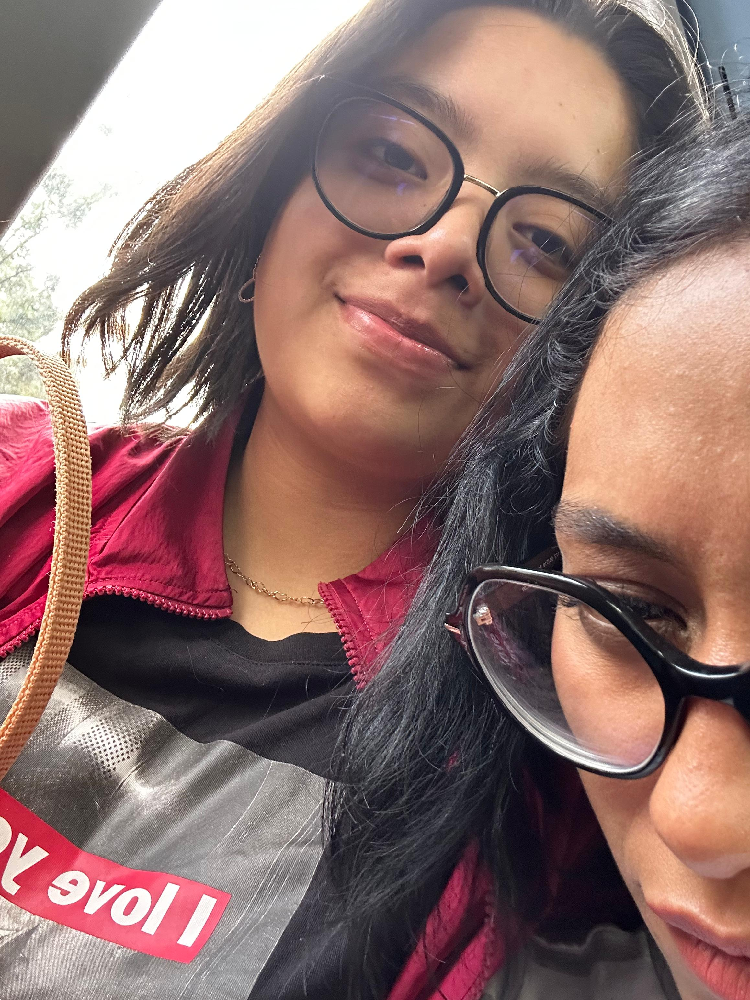
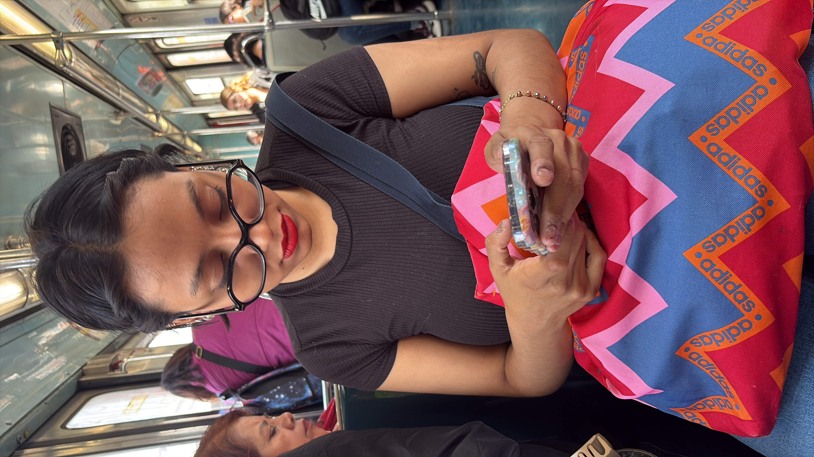

Dime que seguirás mirándome así cuando el tiempo ya no sea gentil con nosotras.
verano, año unoHe visto ciudades enteras rendirse ante el amanecer, y ninguna se comparó a tu forma de quedarte.
carta sin enviarSomos dos películas viejas proyectadas en la misma pared, aún a color después de tantos veranos.
mid-july, otra vezSi el mundo se apaga, que se apague con tu mano todavía dentro de la mía.
promesa, no canciónNo fue la juventud lo que me enamoró de ti. Fue la manera en que te quedaste incluso cuando dejó de ser fácil.
cuarto añoDear Lord, when I get to heaven Please, let me bring my woman When she comes, tell me that you'll let her in Father, tell me if you can Oh, that grace, oh, that body Oh, that face makes me wanna party She's my sun, she makes me shine like diamond.
carta escrita al amornuestras noches de verano





mi reinita hermosa...
A pesar de las adversidades, siempre serás mi mid‑July.
con todo lo que soy